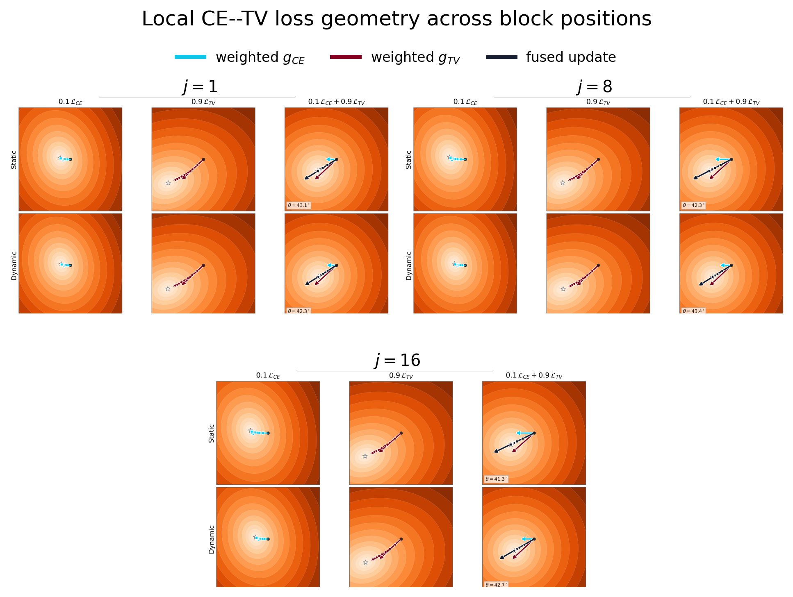
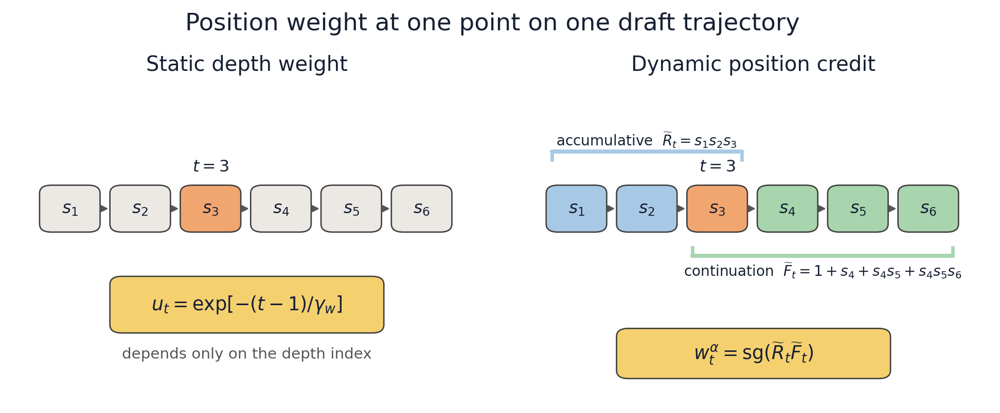
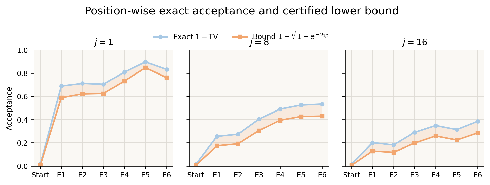

D-PARD is the divergence-form extension of D-PACE. It computes detached
position credit from exact TV overlap and applies Direct Rényi-half to
the local draft distribution. The Rényi–TV inequality connects this
surrogate to a certified lower bound on exact acceptance.
Tianyu Wu · Harvard University
TL;DR
Compute position credit from exact TV overlap, detach it, and use it to weight a Direct Rényi-half loss.
+6.29%T0 accepted length
+4.02%T1 accepted length
Relative to the original static CE+TV objective under the same verified DSpark B16 protocol.
01 · Deployment metricExact TV overlap
measures acceptance
02 · Position creditReach × continuation
allocates the update
03 · Local geometryDirect Rényi-half
fits the distribution
Section 01
TV is deployment-correct, but difficult to optimize
Under stochastic verification, the one-token acceptance probability is exactly the overlap between target distribution \(p\) and draft distribution \(q\):
Maximizing acceptance is therefore equivalent to minimizing TV at a fixed decoding state. At random initialization, the correct token can receive very little draft probability, which attenuates the TV logit gradient.
For a point-mass target \(p=e_y\), the difference is explicit:
The factor \(q_y\) controls the TV gradient magnitude, and a position weight \(w_t\) multiplies this already attenuated update.
Current objectives restore a usable initialization signal in two ways: they fuse TV with a stronger fitting loss, or they rescale the TV direction itself.
Family 1 · Fused losses
Add a distribution-fitting objective to TV
DSpark: fixed CE+TV
CE supplies a point-target gradient when the correct-token draft probability is small. Fixed coefficients set its balance with TV.
LK: adaptive KL+TV
KL supplies the initial fitting signal. An acceptance-dependent coefficient reduces its contribution as overlap improves.
Family 2 · Rescaled TV
Change the scale, not the direction
LK: log acceptance
The factor \(1/\alpha\) strengthens the TV direction at low acceptance, but shifts gradient allocation toward those positions.
Mixed gradients can conflict
CE/KL and TV define different local objectives. After backpropagation through shared draft parameters, the auxiliary update helps TV only when their gradient inner product is positive; a negative inner product worsens the first-order TV change. Position-dependent weights alter this interaction at each draft depth.
Log acceptance changes position allocation
The factor \(w_t^{\alpha}/\alpha_t\) couples trajectory credit and local difficulty. Low-acceptance positions can receive a large multiplier even when reach-based credit is small.

Measured local geometry. The CE–TV angle and conflict probability vary with draft depth and with position weighting.
Section 02
Rényi-half certifies a lower bound on exact acceptance
We need a local loss that avoids TV attenuation without introducing a second proposal objective, while remaining tied to exact acceptance. Define the Bhattacharyya affinity and order-\(1/2\) Rényi divergence:
Reducing Direct Rényi-half increases the right-hand side and therefore improves a certified lower bound on exact TV acceptance. Rényi-half is not itself an acceptance probability.
Short proof
Let \(B=B(p,q)\). Factor each probability difference and apply Cauchy–Schwarz:
Substituting \(\alpha=1-\operatorname{TV}\) gives the result.
Section 03
D-PARD separates position credit from local geometry
D-PARD combines exact TV acceptance with D-PACE's position-credit decomposition. TV determines the detached position weight, and Direct Rényi-half defines the local distribution loss.
1. TV-derived detached position credit
For local acceptance \(\alpha_t=1-\operatorname{TV}(p_t,q_t)\), define smoothed survival, cumulative reach, and continuation value:
\(\widetilde R_t\) is cumulative smoothed survival through position \(t\), and \(\widetilde F_t\) is its continuation value. Their product is recomputed from the current draft distribution and detached before evaluating the local loss.

One position on one draft trajectory. Static weighting depends only on depth; D-PARD recomputes cumulative reach and continuation value from exact TV overlap.
2. Direct Rényi-half local fitting
Direct Rényi-half moves the draft distribution toward the normalized geometric mean of target support and current draft coverage. Its logit gradient avoids the attenuation of the TV update when target-supported draft probability is small.
The detached TV term sets the position weight; Direct Rényi-half supplies the local gradient. The released SpecForge implementation uses the same position-weight-mass reduction as D-PACE, without floor calibration.
Training from initialization
Direct Rényi-half is active from the first update, so D-PARD does not use a CE or CE+TV loss-curriculum warm-up. Standard optimizer learning-rate warm-up is unchanged.
Section 04
Results
Under the same DSpark B16 protocol, dynamic D-PARD improves mean accepted length over the original static CE+TV objective by 6.29% at T0 and 4.02% at T1. The confidence head remains unchanged.
These measurements are from the earlier valid-position experiment; the released SpecForge code uses D-PACE-style position-weight-mass normalization.
Position credit
Objective
T0 mean
T1 mean
Static
DSpark CE+TV
3.490
3.238
Dynamic
LK log acceptance
3.657
3.313
Dynamic
LK adaptive KL+TV
3.680
3.293
Dynamic
D-PARD
3.709
3.368
Full six-benchmark results
T0 evaluation
Credit
Objective
GSM8K
MATH-500
HumanEval
MBPP
MT-Bench
Alpaca
Mean
Static
CE+TV
4.221
4.150
3.655
3.627
2.700
2.585
3.490
Static
LK Lalpha
4.153
4.162
3.671
3.608
2.721
2.612
3.488
Static
LK Llambda
4.132
4.106
3.654
3.586
2.723
2.610
3.468
Dynamic
CE+TV
4.231
4.196
3.646
3.586
2.649
2.532
3.473
Dynamic
LK Lalpha
4.421
4.424
3.869
3.762
2.801
2.668
3.657
Dynamic
LK Llambda
4.450
4.412
3.894
3.823
2.824
2.679
3.680
Dynamic
D-PARD
4.482
4.457
3.926
3.841
2.845
2.702
3.709
T1 evaluation
Credit
Objective
GSM8K
MATH-500
HumanEval
MBPP
MT-Bench
Alpaca
Mean
Static
CE+TV
3.946
3.686
3.443
3.360
2.547
2.447
3.238
Static
LK Lalpha
3.750
3.554
3.246
3.158
2.419
2.376
3.084
Static
LK Llambda
3.710
3.416
3.212
3.125
2.394
2.343
3.033
Dynamic
CE+TV
4.047
3.735
3.436
3.373
2.541
2.426
3.260
Dynamic
LK Lalpha
4.067
3.840
3.520
3.417
2.583
2.449
3.313
Dynamic
LK Llambda
4.070
3.738
3.550
3.401
2.556
2.444
3.293
Dynamic
D-PARD
4.108
3.862
3.633
3.422
2.661
2.524
3.368
Dynamic–static differences include both position-credit shape and overall proposal-gradient scale.

Acceptance and certificate. The Rényi-derived curve remains below exact acceptance throughout training.
Section 05
Minimal loss implementation
The core change is local: replace static fused CE+TV with Direct Rényi-half weighted by detached TV-derived trajectory credit.
The SpecForge actor sums weighted Rényi-half loss and divides by position-weight mass, matching D-PACE's reduction. Its confidence head retains static gamma position weights.